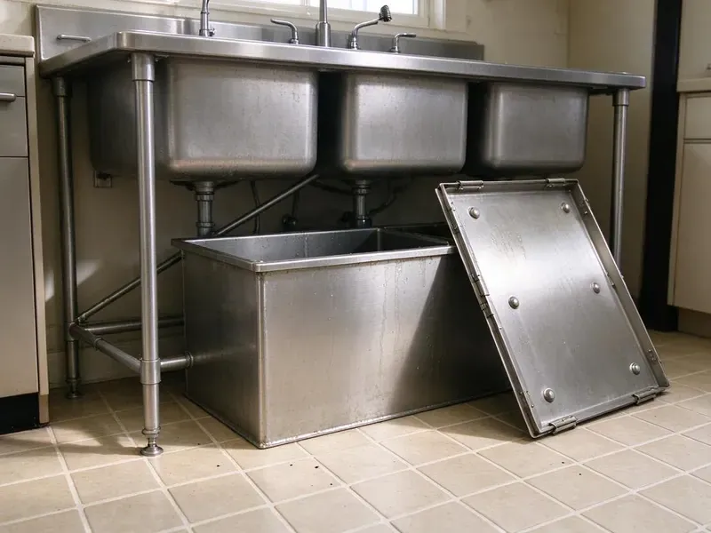

Grease Trap Repair in Durham, NH
A broken grease trap in Durham, NH can fail an inspection fast. We repair baffles, tees, lids and lines without shutting your kitchen down.
- After-Hours Service
- Licensed Commercial Plumbers
- Fast Commercial Service
- Work Guaranteed

Need Grease Trap Repair for Your Kitchen in Durham, NH?
Home or restaurant, we can usually be there the same day.
Grease Trap Repair in Durham, NH
Grease trap problems get expensive when ignored. Skip a small tee repair and you may be paying for sewage in the dining room. We offer prompt repair throughout Durham, NH, with most visits booked the same day and most fixes finished before the kitchen opens the next morning. Larger interceptor work gets scheduled.
Some of what we do:
- Restore crumbling concrete interceptor walls
- Repair or replace broken interceptor baffles
- Replace corroded trap components

Additional Kitchen Plumbing Services in Durham, NH
Our kitchen plumbing services in Durham, NH cover sinks, disposals, dishwashers, and grease traps so your kitchen keeps running without backups or leaks.


Customers
Why Choose FVR Plumbing for Grease Trap Repair in Durham, NH?
Every repair ends with a flow test. We run water through and watch the outlet. If grease shows up downstream or the level behaves wrong, the job is not finished, and we keep working until the trap holds its grease cap and passes clear water out the outlet. Then we write it up.
- Inspection Ready, We fix the items that get written up most, like missing tees and loose lids, under New Hampshire rules.
- Specialized Tools, Jetters and sewer cameras let us find the blockage and clear it instead of guessing.
- Accurate Diagnosis, We pump and inspect before quoting, so we know exactly what failed.
Citywide Coverage
Off-hours scheduling is how we keep repairs from costing you a service. Our crews can start after you close and be gone before the morning prep cook arrives. That matters most for in-floor traps in the kitchen, since the work area is the floor your line cooks stand on all day. We clean up before we leave.
Experienced Team
Licensed commercial plumbers do our grease trap work, not helpers with a pump. Each one has worked on dozens of brands. They keep up with code changes through continuing education hours, and when New Hampshire adopts a new plumbing code edition, the crew reviews what changed for grease interceptors before it takes effect. That shows up on inspections.
Safety-First Approach
Grease waste is regulated, so it cannot go in a dumpster or down another drain. Everything we pump goes to a licensed facility, with a manifest you can keep. Those manifests matter if a pretreatment inspector asks where your last pump-out went, and we hand you a copy on the day of service so it is in your file. Keep them with your maintenance log.
Trusted Certified Durham Plumbing Services Professionals
At FVR Plumbing, we take pride in licensed, certified plumbing services throughout Durham, NH. Those papers on the wall mean something. Every repair, install and maintenance visit follows strict safety and quality rules, and the plumbers doing the work carry recognized industry credentials.
Call Us Now PHCC Plumbing Contractor Recognition
PHCC Plumbing Contractor Recognition Better Business Bureau (BBB) Accreditation
Better Business Bureau (BBB) Accreditation Angi Certified Pro
Angi Certified Pro ISO 9001 Quality Management Certification
ISO 9001 Quality Management CertificationGrease Trap and Interceptor Repair in Durham, NH
Grease Line Clog Repair in Durham, NH
Lines downstream of the trap should stay clean if the trap is working. When we find grease past the outlet, the trap is not doing its job. We jet the downstream run to the property line or the sewer tap, then camera it to confirm the pipe is clear and to document any cracked or sagging sections for a repair quote. If we only clear the line and skip the trap, it clogs again.

Commercial Grease Trap Repair in Durham
Restaurants, school cafeterias, hospital kitchens and bakeries all push more grease than a small trap can hold. We see undersized traps fail in the same few places every time. The inlet tee clogs, the outlet tee gets coated, and grease starts showing up in the sewer manhole down the street, which is usually how the city finds out before the owner does. We repair what broke, then tell you straight whether the unit is sized for your volume.
Damaged Baffle and Lid Repair in Durham, NH
Lids crack when someone sets a stockpot on them or a dolly rolls across a floor-mounted unit. A cracked lid lets odor out and lets mop water in. We replace the lid and gasket with the manufacturer part, and on in-floor units we check that the lid sits flush so nobody catches a toe or a cart wheel on it. While the lid is off, we look at the baffles too.
Grease Trap Leak Repair in Durham
Plastic and fiberglass trap bodies do not rust, but they can crack from a dropped lid or a dishwasher dumping water hotter than the trap is rated for. A hairline crack can sometimes be welded. Anything through the floor of the tank or along a molded seam we treat as a replacement, because patches there fail under the weight of a full trap. You will see the crack yourself before we suggest a fix.
Emergency Grease Trap Repair in Durham
Mid-shift backups usually come from a plugged inlet or a trap that is overdue for pumping. We can often pump it and clear the inlet in under two hours. Our trucks carry common lid gaskets, tees, flow control fittings and test plugs, so a broken part does not always mean a second trip and another lost night. Rush visits take priority.
Leaking Grease Trap Repair in Durham, NH
A wet floor around an under-sink trap usually points to a failed lid gasket or a loose inlet coupling. Older steel bodies rust out along the bottom seams, too. We dry the area, fill the trap and watch where the water shows up. Some days the fix is a cheap gasket and ten minutes. An opened seam is another story, and we will say up front if a patch will not hold.
Commercial Grease Interceptor Repair in Durham, NH
In-ground gravity interceptors run from about 500 gallons to several thousand, usually precast concrete with two compartments. Hydrogen sulfide from the waste eats the concrete above the waterline over time. We pump the tank, inspect the walls and the crossover, and repair spalled concrete with a cementitious patch or an epoxy liner rated for that service. Entry follows confined space rules.

Preventative Grease Trap Maintenance & Repair in Durham, NH
Most trap repairs we do trace back to pumping intervals that stretched too long. Pretreatment programs commonly set the limit at 25 percent of the liquid depth for grease and solids combined. After a repair, we measure the grease cap and solids with a sludge judge and suggest a pumping schedule based on how fast your trap actually fills. Busy fryers fill a trap fast.
Get Grease Trap Repair Near Me in Durham, NH
Local plumbers in Durham, NH see what the weather does over the years to buried tanks and the pipe that runs in and out of them. Water heaters and boilers run long hours through winter, which shortens their service life compared to milder climates. Over the seasons, pipe that expands and contracts can work a fitting loose at the trap. Every repair call includes a look at those joints.
Being close matters because a backed-up trap does not wait for tomorrow. Crews are out working the area every day, so one is rarely far. When you call, dispatch sends the closest truck that has a jetter and a camera on board, and the tech phones you with an arrival window before heading over. Most arrivals are within a couple of hours.
FVR Plumbing at a Glance
- Licensed and insured plumbers serving Durham, NH
- 24/7 emergency service with same-day scheduling
- Clear written estimates, no hidden fees
- 4.9-star rated by 840+ New Hampshire customers
Durham Map
Durham Information
- Population
- 11,147
- Area codes
- Local
- Service area
- Durham and towns within a 40 mile drive
- Nearby
- Dover, Somersworth, Portsmouth, Rochester
Settling ground and heavy traffic stress buried interceptors, risers and lid seals, so fixing them early keeps commercial kitchens in Durham, NH passing inspection without the smell. Frost heave and shifting rocky soil can damage older sewer laterals and shallow water lines.
Expert Services
Call FVR Plumbing for honest, reliable plumbing from people who know the trade in Durham, NH.
Our Specialized Plumbing Services in Durham, NH
At FVR Plumbing, you get every kind of plumbing service from one company across Durham, NH. We go from leak detection all the way to full system installations, for homes and commercial buildings, and we do it quickly at a fair price. Here are the core services we offer:


How Our Grease Trap Repair Visits Work in Durham, NH
We plan repairs around your hours so the kitchen keeps cooking in Durham.
Request a Quote
Call (844) 442-1569 and describe what you are seeing. We set a time for a plumber to visit your Durham location.
On-Site Diagnosis
The plumber pumps the trap if needed and checks the baffles, tees and lid. A camera goes down the lines when the problem is past the trap.
Expert Repair
Once you approve the estimate, the repair gets done with the right parts. Then we flow test the trap before we leave your Durham kitchen.
Frequently Asked Questions About Grease Trap Repair in Durham
Gaskets, tees and flow control fittings typically cost $200 to $800 installed. Bigger jobs like a baffle rebuild or a new riser run $1,000 to $3,000 or more. The written estimate comes before any work, and it lists the parts, the labor and anything like pumping or jetting that adds to the total, so the bill matches what you approved. No surprises at the end.
Slow sinks at the dish station, a sour smell near the trap, and grease showing up in the outlet or the next manhole are the usual signs. An overflow onto the floor is the late one.
Scrape plates into the trash, put strainers in every floor sink, and keep the fryer oil out of the drains entirely. Pump the trap before grease and solids reach a quarter of its depth. For most busy kitchens that works out to every one to three months, and FVR Plumbing can set a schedule from what we measure. Write down each pump-out date.
Broken tees, worn gaskets and cracked lids are routine repairs. A cracked tank body or a rusted-through steel unit usually needs replacing.
Yes, parts and labor are both covered. The terms are written into your service paperwork.
Odors that linger, grease in downstream lines, a broken lid or a wet floor around the unit. A trap that still acts up after pumping usually has a broken part.
Size and location are the main difference. Traps are the small units that sit indoors, under or beside the sinks. An interceptor is a large gravity tank, often 750 gallons or more, buried outside the building and sized for high-volume kitchens. Both separate grease the same way.
Clearing a small clog is about the limit for a do-it-yourself repair. Beyond a clog, the work involves wastewater and parts set to code. An amateur fix that leaves out a flow control fitting or shortens a tee can pass grease to the sewer for months before anyone notices, and it tends to surface as a violation letter. Hire a licensed plumber for the rest.
What Our Customers Say About Our Plumbing Experts

Marcus H.
Grease from the fryer line kept clogging the kitchen drain at my diner. FVR Plumbing hydro jetted the line after closing, showed me the buildup on camera, and set us up on a quarterly cleaning so it does not catch us on a Friday again.
Drain Cleaning · Exeter, NH
Paul B.
Our pit pump ran nonstop even in dry weather. The plumber found the check valve was stuck open, so the same water kept cycling back into the pit. New valve, new float switch, done in an hour. It runs quiet now.
Sump Pump · Dover, NH
Carlos V.
Our house still had galvanized pipe, and upstairs the shower was a trickle. The crew repiped everything in PEX over three days and patched every drywall hole before they left. The pressure difference is night and day.
Repiping · Derry, NH
Patricia H.
We had a slab leak that two other companies could not find. FVR Plumbing located it in under an hour with a listening device. They rerouted the line through the attic instead of breaking up the floor, so we kept our kitchen tile.
Slab Leak Repair · Derry, NHDiane F.
My kitchen faucet had dripped for months and I finally got tired of hearing it at night. FVR Plumbing came out the next morning, replaced the cartridge and the O rings, and tightened a loose base that was letting water under the sink.
Faucet Repair · Derry, NH
Emily R.
The shutoff valve under our kitchen sink snapped off in my hand on a Sunday morning. FVR Plumbing had someone out by early afternoon. He replaced both angle stops with quarter turn valves and showed me where our main shutoff was, which I honestly did not know.
Plumbing Repair · Durham, NH